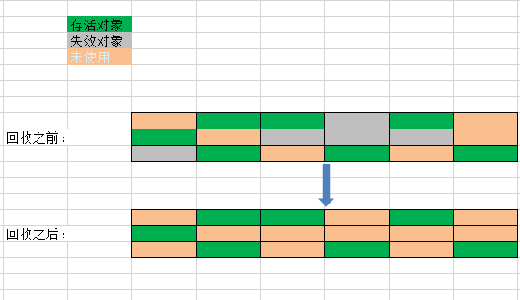
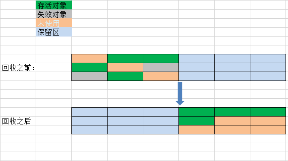
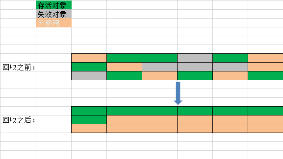
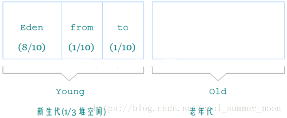

1. 标记——清除算法（Mark-Sweep）

过程
- 标记正所有需要回收的对象
- 标记完成后清除被标记的对象。
理解
图书管里有好多人在看书，图书管理员想要收集起没有被看的书的时候，他决定让所有正在看书的人站起来，然后询问每个人：那一本书是不看的。询问完所有的人之后，同学们做下继续看书。这时候，图书管理员开始寻找所有做过标记的书，把它们收集起来。
缺点
- 每次进行垃圾回收时，会暂停当前用户程序的运行（类似让所有的同学站起来）
- 垃圾回收器需要间隔性的检查，并且标记和清除的过程相对较慢。
- 在标记清除之后可能会产生大量内存碎片，导致一旦需要为大对象分配空间时，由于找不到足够大的内存空间，而不得以引发另外一次GC过程。
2. 标记——复制算法（Mark——Copy）

过程
- 将内存分成两大块（使用区和空闲区）
- 每次只使用一边，当正在使用需要进行垃圾回收的时候，存活的对象将被复制到另外一块区域，原先被使用的区域被重置，转为空闲区。
理解
图书管理员为了更好的发现不看的书，将图书室一分为二(A区和B区)，同一时刻只有一块区域允许看书。开始时只允许在A区看书。当管理员想要回收A区不被看的书的时候，大喊一嗓子“正在看书的同学拿着你书到B区”。等所有人都到了B区后，图书管理员只要把A区的书收集起来，就完成了任务。下一次收集的时候，则是要求同学带着自己看的书从B区转移到A区。如此循环往复即可。
缺点
- 原有可用空间被缩小为1/2，空间利用率降低了。
- 过程中也会暂停当前应用的运行。
3. 标记——整理算法（Mark——Compat）

过程
- 和标记清除算法一样对无用内存进行标记
- 让所有存活的对象都移动到一端
- 清理除了存活对象边界端以外的内存
缺点
- 暂停当前应用的运行，非实时性的回收。
4. 分代收集算法
分代收集算法理论来源于统计学。IBM公司的专门研究发现，对象的生存周期总体可分为三种：新生代、老年代和永久代。因此可以根据各个年代的特点采用适当的垃圾回收算法
- 比如新生代的对象在每次垃圾时都会有大量的对象死去，只有很少一部分存活，那就可以选择标记-复制算法。
- 另外，在新生代中每次死亡对象约占98%，那么在标记-复制算法中就不需要按照1：1的比例来划分内存区域，而是将新生代细分为了一块较大的Eden和两块较小的Survivor区域，HotSpot中默认这两块区域的大小比例为8：2。每次新生代可用区域为Eden加上其中一块Survivor区域，共90%的内存空间，这样就只有10%的内存空间处在被闲置状态。在进行垃圾回收时，存活的对象被转移到原本处在“空闲的”Eden区域。
- 如果某次垃圾回收后，存活对象所占空间远大于这10%的内存空间时，也就是Survivor空间不够用时，需要额外的空间来担保，通常是将这些对象转移到老年代。对于老年代来说，大部分对象都处在存活状态。
- 同时，如果一个大对象要在该区域进行分配，而内存空间又不足，那么在没有外部内存空间担保的情况下，就必须选用标记-清除或者标记-整理算法来进行垃圾回收了。
这个过程可能不是很好理解，下面用一个例子生动的解说：
jvm区域总体分两类（HotSpot虚拟机GC算法采用分代收集算法）：
- heap区
- Eden Space（伊甸园）
- Survivor Space(幸存者区)
- 生活区 Survivor(A)
- 无人区 Survivor(B)
- Tenured Gen（老年代-养老区）
- 非heap区。
- Code Cache(代码缓存区)
- Perm Gen（永久代）
- Jvm Stack(java虚拟机栈)
- Local Method Statck(本地方法栈)。
- 一个人对象new 出来后会在Eden Space（伊甸园）无忧无虑的生活，直到GC到来打破了他们平静的生活。GC会逐一问清楚每个对象的情况，有没有钱（此对象的引用）啊，然后进行敲诈，然后富人就会进入Survivor Space（幸存者区），穷人的就直接kill掉。
- Survivor Space(幸存者区有两个区域：生活区和无人区)，当GC过来时候就会去生活区进行敲诈，被敲诈包括本次15次 的土豪，进入养老区，交不起保护费 的杀死， 没满足15 次，但是手里还有点钱的就生活在无人区，这个无人区就变成了生活区， 以前的生活区（人都被移走了） 又变成了无人区。
- 大对象直接近入老年代-养老区：有些世界土豪出生。 他父母直接砸了几百亿， 身份显赫， 进入老年代，有钱就是嚣张！不用去Eden Space（伊甸园）。

老年代：老年代中使用“标记-清除”或者“标记-整理”算法进行垃圾回收，回收次数相对较少，每次回收时间比较长。
补充
方法区对象回收
永久代指的是虚拟机内存中的方法区，永久代垃圾回收比较少，效率也比较低，但也必须进行垃圾回收，否则永久代内存
不够用时仍然会抛出OutOfMemoryError异常。永久代也使用“标记-清除”或者“标记-整理”算法进行垃圾回收。